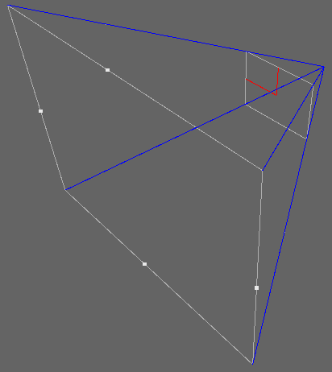
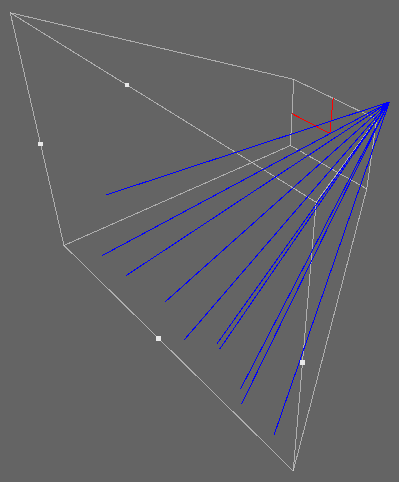
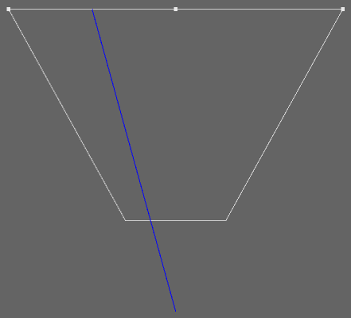
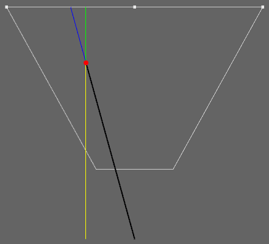

通过深度图重建坐标
2016-12-6
从 Depth-Map 重建坐标的两个方法：
重建相机空间坐标
从 Normalized Device Coordinates（NDC）转换到 Camera Space，其实就是一个矩阵的乘法，简单来说只需要将 NDC 坐标和 Projection Matrix 的逆相乘即可得到 Camera Space 的坐标。坐标重建的过程一般会在 Fragment 中进行，这样会产生大量的计算消耗，为了减少这些消耗，可以使用一种取巧的方法来避免。
\[\begin{bmatrix} {cot{\theta \over 2} \over Aspect} & 0 & 0 & 0 \\ 0 & cot{\theta \over 2} & 0 & 0 \\ 0 & 0 & -{f+n \over f-n} & -{2nf \over f-n} \\ 0 & 0 & -1 & 0 \end{bmatrix}\]
从 Projection Matrix 可以看出，Camera Space 的坐标的 xy 分量在变换的时候，只有第一行和第二行对角线上的两个值参与了（因为气他值是0，可以不考虑），也就是 ProjMat[0][0]、ProjMat[1][1]。所以完全没必要求 Projection Matrix 的逆矩阵。下面我们先正向推导一遍，即从 Camera Space 转换到 NDC。
Matrix4x4 projectionMatrix = camera.projectionMatrix;
Vector3 posInCamSpace = myPos;
Vector3 posInNDC = projectionMatrix.MultiplyPoint(posInCamSpace);
MultiplyPoint 这个方法是引擎封装好了的，具体的实现是这样的：
public Vector3 MultiplyPoint(Matrix4x4 mat, Vector3 v)
{
Vector3 result;
result.x = mat.m00 * v.x + mat.m01 * v.y + mat.m02 * v.z + mat.m03;
result.y = mat.m10 * v.x + mat.m11 * v.y + mat.m12 * v.z + mat.m13;
result.z = mat.m20 * v.x + mat.m21 * v.y + mat.m22 * v.z + mat.m23;
float num = mat.m30 * v.x + mat.m31 * v.y + mat.m32 * v.z + mat.m33;
num = 1 / num;
result.x *= num;
result.y *= num;
result.z *= num;
return result;
}
下面我们将所有相乘后为 0 的值去掉，并且去除 z 分量（因为 z 分量的值可以直接从 Depth-Map 中获取，不需要重建），最后简化为：
public Vector3 MultiplyPoint(Matrix4x4 mat, Vector3 v)
{
Vector3 result;
result.x = mat.m00 * v.x;
result.y = mat.m11 * v.y;
float num = mat.m32 * v.z;
num = 1 / num;
result.x *= num;
result.y *= num;
return result;
}
要做这个的逆运算就很方便了：
posInCamSpace.x = posInNDC.x * zLinearEyeDepth / ProjMat[0][0];
posInCamSpace.y = posInNDC.y * zLinearEyeDepth / ProjMat[1][1];
在 Shader 中写为：
float2 proj0011 = float2(unity_CameraProjection[0][0], unity_CameraProjection[1][1]);
posInCamSpace.xy = posInNDC.xy * zLinearEyeDepth / proj0011;
优化为：
posInCamSpace.xy = poseInNDC.xy * _OneOverProj0011 * zLinearEyeDepth;
重建世界空间坐标

如图中的相机视锥体，首先求出蓝色的四条向量，这四条蓝色向量通过顶点传入 vertex shader，再通过 fragment shader 进行插值，插值后的效果入下图：

从中挑选出一个向量来说明，如何计算：
 
顶视图
从图中可以很明显的推导出：
\[ {YellowL \over YellowL + GreenL} = {\overrightarrow{BlackV} \over \overrightarrow{BlackV} + \overrightarrow{BlueV}} \]
又因为：
\[ YellowL + GreenL = 1 \]
所以最终简化为：
\[ \overrightarrow{BlackV} = YellowL * \left( \overrightarrow{BlackV} + \overrightarrow{BlueV} \right) \]
其中，$$$ YellowL $$$ 就是从 Depth-Map 中取出的值（01 空间），$$$ \overrightarrow{BlackV}+\overrightarrow{BlueV} $$$ 就是四条蓝色向量经过 fragment shader 插值后的向量。所以：
\[\begin{align} \overrightarrow{BlackV} &= YellowL * \overrightarrow{interpolatedRay} \\ wPos &= camWPos + \overrightarrow{BlackV} \end{align}\]
还有一种类似的方法，Unity Shader入门精要 中所使用的。基本思想与这里介绍的类似，差异在于求四条蓝色向量以及 Depth-Map 采样后没有线性化到 01 空间。